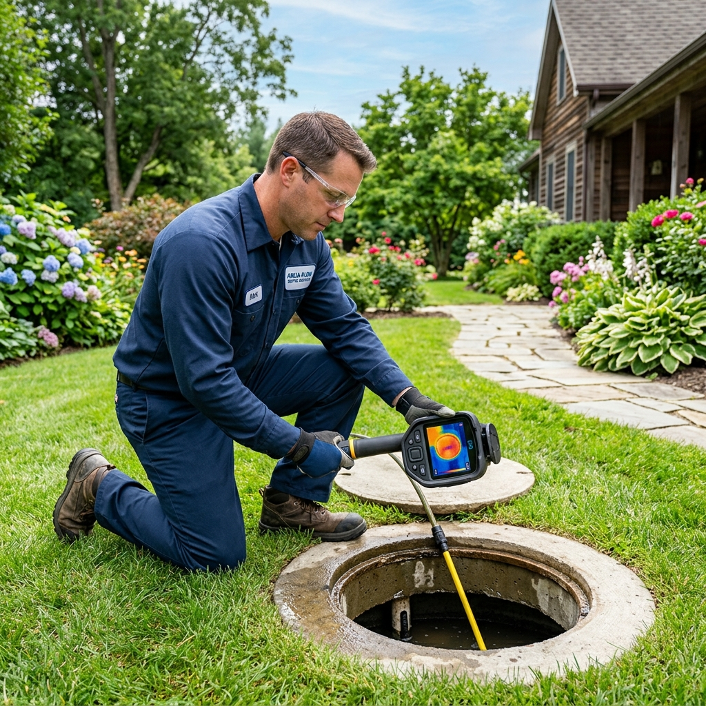
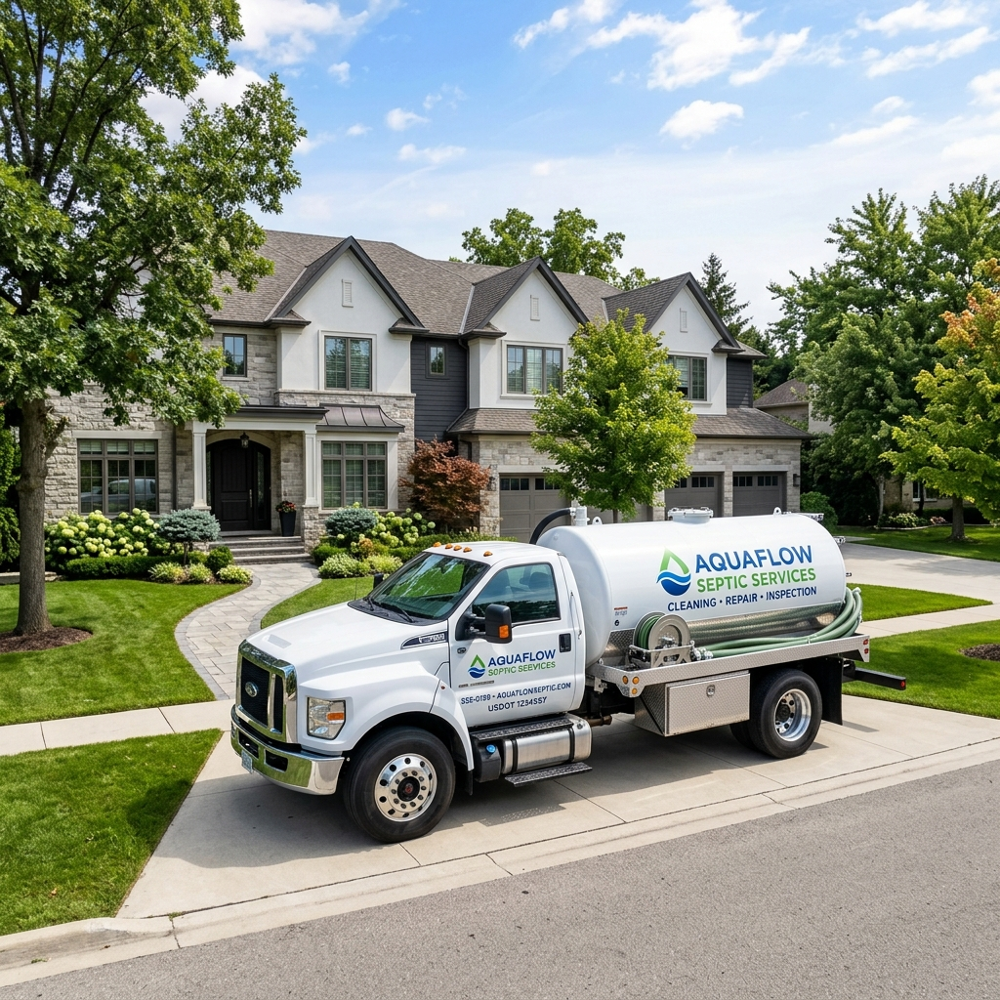

Routine maintenance and fast emergency evacuations to maximize your system lifespan.
Our comprehensive residential pumping service involves far more than simply emptying the sludge from your tank. Over time, heavy solids accumulate at the bottom of the tank, while fats, oils, and grease form a thick 'scum' layer at the top.
If left unchecked, these layers merge, blocking the outlet pipe, flowing into your drainfield, and causing tens of thousands of dollars in permanent damage. By vacuuming out these layers entirely and washing down the tank walls, we restore your tank back to its original capacity, keeping your drainfield biologically healthy.

Using electronic locators, we safely dig directly above the access lids without disturbing your landscaping unnecessarily.

We use a "crust buster" to break up hardened layers, then pump out the liquid, solids, and grease layers completely.
Technicians perform a visual inspection of the inlet and outlet baffles to ensure wastewater is flowing perfectly.
Lids are secured tightly, soil is returned, and you are provided with a full condition report and receipt.
Don't wait for a disaster. Schedule an appointment online today.
Book Service